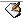
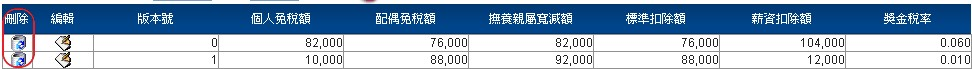
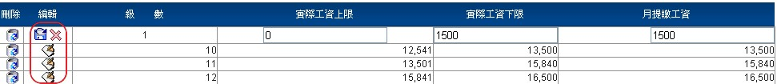

1 新增作業
1.1 點選左側【特休參數設定】，於
的一欄，輸入【到職月數下限】與【特休天數】，參考(圖F-3)
1.2 資料輸入完畢後，按下
1.3 也可重新設定【特休參數】與【特休天數】，參考(圖F-3)
HRMS人力資源系統
陸、系統參數管理 (※注意，【新增】、【刪除】、【編輯】、【查詢】等功能限具有相應功能權限者可使用。)
A.薪資參數設定
人事薪資參數設定，必須先在公司參數設定的公司主檔建立公司資料明細，再做細項的設定，所有設定的項目皆依照勞委會公布的標準執行(並會根據政府的法令更改，變動其項目設定)。
1.點選左側【薪資參數設定】，使用下拉式選單選擇【公司】，參考圖F-1。
2.此作業可根據【公司】設定加班參數、薪資參數、特休參數、薪資轉存的資料，參考圖F-1。
(圖F-1)
B.薪資試算控管
主要是查詢薪資試算作業與薪資確認作業，所以必須先做薪資的試算、確認，方且查詢到人事薪資控管的明細資料
1.點選左側【薪資試算控管】，即可顯示【公司】、【年月】、【試算日期】、【確認日期】資料，參考圖F-2。
(圖F-2)
C.特休參數設定
1 新增作業
1.1 點選左側【特休參數設定】，於
1.2 資料輸入完畢後，按下
1.3 也可重新設定【特休參數】與【特休天數】，參考(圖F-3)
(圖F-3)
2 查詢作業
2.1 輸入【到職滿】幾年、幾月，即可找出需要的資料，參考(圖F-4)
(圖F-4)
3 編輯與刪除作業
3.1 欲編輯資料點選編輯修改【到職月數下限】與【特休天數】，更新後的資料請點選
更新或取消來退出，參考(圖F-5)
(圖F-5)
3.2 欲刪除資料，可直接點選
刪除退出，參考(圖F-6)
(圖F-6)
D.假別設定
1 新增作業
1.1 點選左側【假別設定】，參考(圖F-7)。
1.2 位於
【全年可請】、【全勤】，參考(圖F-7)。
1.3資料選擇完畢後，按下
(圖F-7)
2 編輯與刪除作業
2.1 欲編輯【假別基本資料】，選擇編輯來修改【假別名稱】與【薪別】【計薪天數】【計薪比率】、【全年可請】、【全勤】，結束請點選
(圖F-8)
2.2 欲刪除資料，於(圖G-2) 可直接點選
(圖F-9)
E.成本中心分攤
1 新增作業
1.1 點選左側【成本中心分攤】，點選
(圖F-10)
1.2點選
【生效日】，輸入資料後，按下
(圖F-11)
2 查詢作業
2.1 可依【公司】、【部門】、【員工】所顯示的下拉式選單來查詢已建檔人員資料，參考(圖F-12)。
(圖F-12)
3 編輯與刪除作業
3.1 選擇編輯來修改【部門別】、【員工】、【分攤至部門】、【分攤比例】、【生效日】，結束請點選
(圖F-13)
3.2 欲刪除資料，於(圖F-3) 可直接點選
(圖F-14)
F.薪資項目設定
此作業為薪資結構參數維護，並建立薪資的項目資料，建立完成的資料將列入薪資計算
1新增作業
1.1 點選左側【薪資項目參數】， 點選右側畫面中的

(圖F-15)
1.2點選
(圖F-16)
2查詢作業
2.1 點選左側【薪資項目參數】，即會顯示出【薪資代碼】、【薪資名稱】資料 ，參考(圖F-17)。
(※【薪資代碼】01~19為系統內定，無法修改、新增、刪除)
(圖F-17)
3修改作業
3.1 點選編輯按鍵，會出現修改的視窗，可選擇需修改的部分，參考(圖F-18)。
(圖F-18)
G.所得稅率參數設定
(＊此作業依據政府提供資料自動匯入到系統，可依法令修改)
1.新增作業
1.1 點選左側【所得稅率參數檔程式】，於
1.2資料選擇完畢後，按下

(圖F-19)
2 查詢作業
2.1 輸入【版本號】，即可找出需要的資料，參考(圖F-20)。
(圖F-20)
3 編輯與刪除作業
3.1 欲編輯【所得稅率參數檔程式】，選擇編輯來修改【個人免稅額】、【配偶免稅額】、【撫養親屬寬減額】、【標準扣除額】、【薪資扣除額】、【獎金稅率】，結束請點選
(圖F-21)
3.2 欲刪除資料，可直接點選
(圖F-22)
H.所得稅率對照表
(＊依據政府提供資料自動匯入到系統，可依法令修改 )
1.新增作業
1.1點選左側【所得稅率對照表】，於
1.2 資料輸入完畢後，按下
(圖F-23)
2查詢作業
2.1輸入【所得稅率】，即可找出需要的資料，參考(圖F-24)
(圖F-24)
3. 編輯與刪除作業
3.1欲編輯【所得稅率對照表】，選擇編輯來修改【所得稅下限】、【所得稅上限】、【累進差額】，結束請點選
(圖F-25)
3.2 欲刪除資料 可直接點選
(圖F-26)
I.全民健保參數檔
(＊本作業可依全民健保局最新公告版本更新參數設定)
1新增作業
1.1點選左側【全民健保參數檔】，於
1.2資料輸入完畢後，按下
(圖F-27)
2查詢作業
2.1輸入【版本號】，即可找出需要的資料，參考(圖F-28)
(圖F-28)
3編輯與刪除作業
3.1選擇欲修改的【版本號】點選進入編輯畫面，點選
(圖F-29)
3.2欲刪除資料可直接點選
(圖F-30)
J.勞保投保級數
1新增作業
1.1點選左側【勞保投保級數】，於
1.2資料輸入完畢後，按下
(圖F-31)
2查詢作業
2.1輸入【級數】，即可找出需要的資料，參考(圖F-32)
(圖F-32)
3編輯與刪除作業
3.1選擇欲修改的【勞保投保級數】點選進入編輯畫面，點選
參考(圖F-33)。
(圖F-33)
3.2欲刪除資料可直接點選
(圖F-34)
K.勞保費率參數
1新增作業
1.1點選左側【勞保費率參數】，於
1.2資料輸入完畢後，按下
(圖F-35)
2查詢作業
2.1輸入【版本號】，即可找出需要的資料，參考(圖F-36)
(圖F-36)
3編輯與刪除作業
3.1選擇欲修改的【勞保投保級數】點選進入編輯畫面，點選
參考(圖F-37)。
(圖F-37)
3.2欲刪除資料可直接點選
(圖F-38)
L.健保投保級數
1.新增作業
1.1點選左側【健保投保級數】，於
【補助差額】、【應計保險費】、【本人】、【+1眷】、【+2眷】、【+3眷】、【公司】 ，
參考(圖F-39)。
(圖F-39)
1.2資料輸入完畢後，按下
2查詢作業
2.1輸入【級數】，即可找出需要的資料，參考(圖F-40)
(圖F-40)
3編輯與刪除作業
3.1選擇欲修改的【級數】點選進入編輯畫面，點選
參考(圖F-41)。
(圖F-41)
3.2欲刪除資料可直接點選
(圖F-42)
M.經常性支付薪資
1新增作業
1.1 點選左側【經常性支付薪資項目維護】於
1.2 資料選擇完畢後，按下
(圖F-43)
2查詢作業
2.1 輸入【薪資代碼】，即可找出需要的資料，參考(圖F-44)
(圖F-44)
3.刪除作業
3.1欲刪除資料，可直接點選
(圖F-45)
N.月提撥工資分級表
(＊依據政府提供資料自動匯入到系統，可依法令修改)
1新增作業
1.1 點選左側【月提繳工資分級表設定】於
1.2 資料輸入完畢後，按下
(圖F-46)
2編輯與刪除作業
2.1 欲編輯【月提繳工資分級表設定】，於(圖Q-2)選擇編輯來修改【實際工資上限】、【實際
工資下限】、【月提繳工資】，結束請點選
(圖F-47)
2.2 欲刪除資料，可直接點選
(圖F-48)